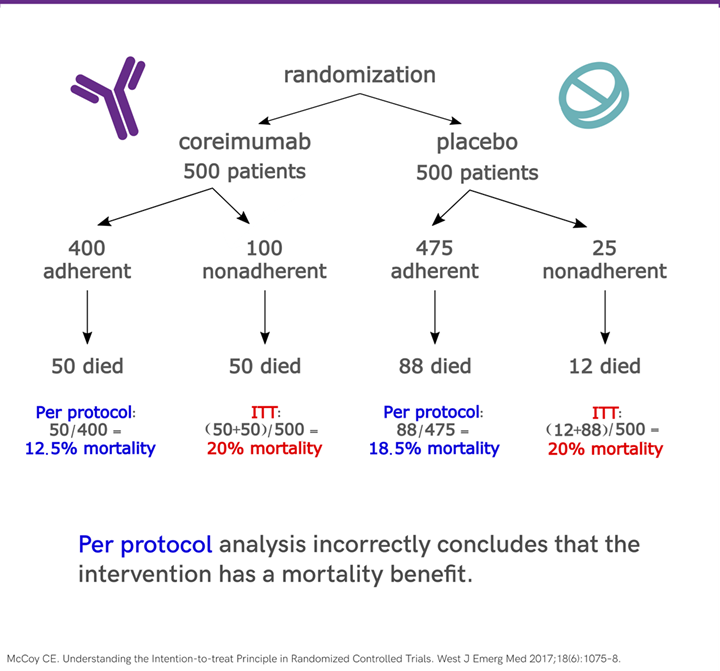

Ensayos aleatorizados: por qué el azar permite hablar de causas
Nota🩺 Escenario
Los ensayos CREDENCE, DAPA-CKD y EMPA-KIDNEY asignaron al azar a pacientes con ERC a un iSGLT2 o a placebo y encontraron menos eventos renales con el fármaco. Muchos registros observacionales mostraban lo mismo, pero ningún nefrólogo los habría usado para cambiar guías clínicas. ¿Qué tiene de especial sortear el tratamiento? En este subcapítulo lo ves con datos, y de paso aprendes a generar una lista de aleatorización y a analizar un ensayo sin engañarte.
Lo que vamos a hacer
Comprobar con datos simulados qué logra la aleatorización frente a un registro observacional.
Repasar los pasos clave del diseño y los sesgos que aún pueden dañar un ensayo.
Generar una lista de aleatorización en R.
Comparar el análisis por intención de tratar (ITT) y por protocolo (PP), contra la verdad conocida.
Paso 1. Qué logra la aleatorización
El ensayo clínico aleatorizado (ECA) es el estándar de referencia para estimar efectos causales. La razón: al asignar el tratamiento por azar, en promedio los grupos quedan iguales en todo lo que importa, incluso en lo que no medimos. Entonces, si hay una diferencia en el desenlace, es razonable atribuirla a la intervención. En el lenguaje del Capítulo 3.2: la aleatorización garantiza la intercambiabilidad.
Veámoslo con dos bases simuladas del libro: un ECA de bicarbonato vs. placebo (eca_bicarbonato, aleatorizado) y el registro observacional de iSGLT2 (ckd_isglt2, donde el tratamiento se indicó según el paciente). Comparamos cuán desbalanceados quedan los grupos con la diferencia de medias estandarizada (DEM o SMD; por convención, |DEM| < 0.1 indica buen balance):
Qué vemos. En el ensayo, los grupos son parecidos en todo (|DEM| máximo = 0.14; el pequeño desbalance en la TFGe es solo azar, con 640 pacientes). En el registro, los tratados son más jóvenes (DEM = -0.58 en la edad) y con mejor TFGe (0.44) y más albuminuria (0.43): comparar sus desenlaces mezclaría el efecto del fármaco con esas diferencias. Eso es lo que corrige la aleatorización, y lo que habrá que corregir con métodos en los subcapítulos siguientes.
Recuerda también la diferencia entre eficacia (efecto en condiciones ideales, típico de ensayos explicativos) y efectividad (efecto en la práctica real, de ensayos pragmáticos): los primeros tienen poblaciones muy seleccionadas, adherencia estricta y alta validez interna; los segundos, pacientes diversos y condiciones habituales, con mayor validez externa. Es un espectro, y la herramienta PRECIS-2 ayuda a ubicar un ensayo en él.
Paso 2. ¿Qué preguntas responde un ECA?
Preguntas sobre intervenciones: “¿qué pasaría si aplicáramos esta intervención en esta población?” Debe haber una intervención definida, al menos un comparador (placebo, tratamiento estándar u otra intervención) y desenlaces clínicamente relevantes y medibles. Ejemplo en nefrología: ¿la restricción de sodio mejora la presión arterial y la proteinuria en ERC G3-G4? Un ECA no es el diseño adecuado para estimar prevalencias, identificar factores pronósticos o generar hipótesis: para eso están los estudios observacionales (Capítulo 1.2).
Paso 3. Del PICO al protocolo
Un ECA riguroso decide, antes de reclutar, cada uno de estos puntos:
Pregunta PICO definida (por ejemplo: en adultos mayores con ERC, ¿las estatinas, frente a placebo, reducen la mortalidad cardiovascular?) y equipoise: incertidumbre clínica genuina sobre cuál opción es mejor, que justifica éticamente sortear.
Población: criterios de inclusión y exclusión. Criterios estrictos dan más validez interna; una muestra representativa, más validez externa.
Diseño:paralelo (cada participante recibe un solo brazo), cruzado (recibe ambos en momentos distintos) o factorial (evalúa varias intervenciones y sus combinaciones).
Paralelo
Cruzado
Factorial
Aleatorización: simple (moneda o software), por bloques (mantiene tamaños similares), estratificada (equilibra variables clave, como el centro) o por conglomerados (se sortean grupos completos, como hospitales; reduce la contaminación entre brazos pero exige más pacientes). Cada paciente se aleatoriza una sola vez y el ocultamiento de la secuencia es tan importante como el azar.
Cegamiento: simple (el paciente no sabe), doble (paciente y evaluador) o triple (también quien analiza). Si no es posible (cirugía, estilo de vida), usa evaluadores ciegos, desenlaces objetivos y análisis ITT, y justifica por qué.
Tamaño muestral: depende del efecto esperado, la variabilidad, el nivel de significancia (α) y la potencia (1 − β); ver el Capítulo 20. Conviene sobreestimarlo ligeramente para compensar pérdidas.
Desenlaces: un único primario, clínicamente importante y definido de antemano; los secundarios y los subrogados (en nefrología, TFGe y albuminuria) se interpretan con cautela, porque mejorar un valor de laboratorio no garantiza mejorar lo que importa al paciente (diálisis, trasplante, eventos cardiovasculares, muerte). Un desenlace compuesto es útil si los eventos son poco frecuentes, pero sus componentes pueden no pesar igual.
Análisis, ética y registro: plan estadístico preespecificado (ITT o PP, datos faltantes), comité de ética, consentimiento informado y registro prospectivo (p. ej., ClinicalTrials.gov).
Reporte: guía CONSORT, con su diagrama de flujo de participantes.
Paso 4. Práctica: generar una lista de aleatorización
set.seed(2025)# semilla: permite reproducir la lista (guárdala y no la compartas con quien recluta)# a) Aleatorización simple (como lanzar una moneda)simple<-sample(c("iSGLT2", "Control"), size =20, replace =TRUE)table(simple)# con n pequeño los grupos pueden quedar desbalanceados
simple
Control iSGLT2
7 13
# b) Aleatorización por bloques de 4 (mantiene los grupos balanceados)bloques<-function(n_bloques, tam=4){unlist(replicate(n_bloques, sample(rep(c("iSGLT2", "Control"), tam/2)), simplify =FALSE))}por_bloques<-bloques(5)table(por_bloques)
por_bloques
Control iSGLT2
10 10
# c) Aleatorización estratificada: bloques dentro de cada estrato (aquí, diabetes sí/no)lista<-tibble(id =1:96, diabetes =rep(c("Sí", "No"), each =48))|>group_by(diabetes)|>mutate(grupo =bloques(n()/4))|>ungroup()table(lista$diabetes, lista$grupo)
Control iSGLT2
No 24 24
Sí 24 24
Qué vemos. Con 20 pacientes, la aleatorización simple dejó 13 en iSGLT2 y 7 en control; por bloques, exactamente 10 y 10; y la estratificada, 24 y 24 dentro de cada estrato.
Tip💡 En un ensayo real, la lista la genera alguien independiente
Quien genera la lista no debe ser quien recluta, y la secuencia se oculta (sobres opacos o un sistema centralizado). Además, variar el tamaño del bloque (4, 6, 8) impide que el investigador adivine la siguiente asignación.
Paso 5. Los sesgos que la aleatorización no elimina
Aleatorizar no basta: el ensayo puede sesgarse después. Cada sesgo tiene su remedio:
Sesgo
¿Qué es?
Cómo prevenirlo
Selección
Los grupos difieren sistemáticamente al inicio
Secuencia aleatoria y ocultamiento de la asignación
Desempeño
Participantes o personal cambian su conducta por saber la asignación
Cegamiento; protocolos estandarizados para ambos grupos
Detección
La evaluación del desenlace depende del grupo asignado
Evaluadores ciegos; desenlaces objetivos y validados
Desgaste (attrition)
Pérdidas diferenciales entre grupos
Registrar todas las pérdidas (CONSORT); análisis ITT
Notificación (reporting)
Se publican solo los resultados favorables o significativos
Registro prospectivo; reportar todos los desenlaces preespecificados
Paso 6. Intención de tratar vs. por protocolo
¿Qué hacemos con los pacientes que abandonan el tratamiento o no cumplen el protocolo? Hay dos formas de analizarlos:
Intención de tratar (ITT): se analiza a todos según el grupo al que fueron asignados, sin importar si cumplieron. Preserva la aleatorización y refleja lo que pasa en la práctica. Estima el efecto de ser asignado al tratamiento.
Por protocolo (PP): se analiza solo a quienes cumplieron. Pretende estimar el efecto en condiciones ideales, pero sacrifica la aleatorización: ya no compara grupos creados por azar, sino cumplidores con no cumplidores, y quienes cumplen suelen tener mejor pronóstico.
Un ejemplo clásico
Un ensayo ficticio (McCoy, 2017; Detry y Lewis, 2014) sortea 500 pacientes a un fármaco (coreimumab) y 500 a placebo. En el brazo tratado, 400 cumplen (50 mueren) y 100 no (50 mueren); en el placebo, 475 cumplen (88 mueren) y 25 no (12 mueren).
ensayo_ficticio<-tribble(~brazo, ~cumple, ~pacientes, ~muertes,"Coreimumab", "Sí", 400, 50,"Coreimumab", "No", 100, 50,"Placebo", "Sí", 475, 88,"Placebo", "No", 25, 12)# ITT: todos según lo asignadoitt<-ensayo_ficticio|>group_by(brazo)|>summarise(mortalidad =sum(muertes)/sum(pacientes))# PP: solo cumplidorespp<-ensayo_ficticio|>filter(cumple=="Sí")|>group_by(brazo)|>summarise(mortalidad =sum(muertes)/sum(pacientes))tibble(analisis =c("ITT", "PP"), coreimumab =c(itt$mortalidad[1], pp$mortalidad[1]), placebo =c(itt$mortalidad[2], pp$mortalidad[2]))|>mutate(RR =coreimumab/placebo)
Qué vemos. Con ITT la mortalidad es 20 % en ambos brazos (RR = 1): el fármaco no modifica la mortalidad. Con PP aparece un beneficio aparente (12.5 % vs. 18.5 %; RR = 0.67) que no existe: los que no cumplieron en el brazo del fármaco eran, por algún motivo, los de peor pronóstico, y al excluirlos se “mejoró” el grupo tratado.

Esquema del ejemplo (adaptado de McCoy, 2017).
Una simulación con la verdad conocida
Simulamos un ensayo de 4000 pacientes. El tratamiento reduce el desenlace en 0.5 unidades en quien lo recibe (más alto = peor). Los pacientes con peor pronóstico abandonan el tratamiento con más frecuencia. En el brazo control no hay fármaco que abandonar, así que el PP descarta solo a los no cumplidores del brazo tratado.
set.seed(10)n<-4000pronostico<-rnorm(n)# mayor = peor pronósticoasignado<-rbinom(n, 1, 0.5)# aleatorizaciónadherente<-rbinom(n, 1, plogis(1.2-1.2*pronostico))# los de peor pronóstico abandonan másrecibe<-asignado*adherente# recibe el fármaco solo si fue asignado Y adhieredesenlace<-1.0*pronostico-0.5*recibe+rnorm(n)# efecto verdadero de recibir el fármaco: -0.5ensayo<-tibble(pronostico, asignado, adherente, recibe, desenlace)comparacion<-tibble( análisis =c("Verdad (efecto de recibir el fármaco)","ITT (todos, según lo asignado)","PP (solo cumplidores del brazo tratado vs. todos los controles)"), estimado =c(-0.5,coef(lm(desenlace~asignado, data =ensayo))[["asignado"]],mean(ensayo$desenlace[ensayo$asignado==1&ensayo$adherente==1])-mean(ensayo$desenlace[ensayo$asignado==0])))|>mutate(estimado =round(estimado, 2))comparacion
# A tibble: 3 × 2
análisis estimado
<chr> <dbl>
1 Verdad (efecto de recibir el fármaco) -0.5
2 ITT (todos, según lo asignado) -0.42
3 PP (solo cumplidores del brazo tratado vs. todos los controles) -0.83
El ITT (-0.42) subestima el efecto de recibir el fármaco porque solo 73 % de los asignados lo toma: el efecto se diluye hacia 0. Pero la comparación es válida.
El PP (-0.83) exagera el efecto: compara cumplidores (de mejor pronóstico) con todos los controles. Se rompió la aleatorización.
Advertencia⚠️ ITT no corrige la falta de adherencia, y “ITT modificado” no es un cheque en blanco
El ITT protege contra el sesgo de selección posterior a la aleatorización, pero estima el efecto de ser asignado, que se diluye si muchos no toman el fármaco. Un ITT “negativo” puede esconder un fármaco que funciona en quienes lo toman. Por eso en estudios de no inferioridad el ITT puede favorecer falsamente al tratamiento nuevo, y conviene examinar ambos análisis. Y no confundas tres situaciones: no adherencia (se conoce el desenlace; en ITT se mantiene en su grupo), pérdida de seguimiento (no se conoce el desenlace; se reporta y se aborda con métodos de datos faltantes, no excluyéndola) e “ITT modificado” (cada exclusión puede reintroducir sesgo; debe estar preespecificado y justificado).
Para estimar el efecto “por protocolo” sin engañarse, se usan métodos causales (ponderar por la probabilidad de ser adherente según el pronóstico, la misma lógica de ponderación del Capítulo 3.2) que veremos en el Capítulo 11.
Un ejemplo publicado: DEFENDER
Tavares y col. (JAMA, 2024) evaluaron dapagliflozina 10 mg más atención estándar frente a atención estándar sola en pacientes críticos con disfunción orgánica aguda (ensayo multicéntrico, abierto, 22 UCI en Brasil, aleatorización 1:1). Se aleatorizaron 507 pacientes (248 y 259 por brazo) y todos entraron al análisis ITT. El desenlace primario fue una combinación jerárquica de mortalidad hospitalaria, inicio de terapia de reemplazo renal y estancia en UCI a 28 días, sin diferencias estadísticamente significativas. Al leer un ensayo, comprueba siempre cómo se generó la secuencia y cómo se ocultó la asignación (se describe en los métodos).
Importante🎯 En resumen
Concepto
Qué recordar
Aleatorización
Equilibra factores conocidos y desconocidos; el ocultamiento de la secuencia importa tanto como el azar
Cegamiento
Reduce sesgos de desempeño y detección; si no es posible, usa desenlaces objetivos y evaluadores ciegos
ITT
Analiza según lo asignado; análisis principal en superioridad; estima el efecto de la asignación
PP
Excluye a los no adherentes; rompe la aleatorización; interpretar con cautela
Pérdidas
Se reportan (CONSORT) y se abordan con métodos para datos faltantes; no se resuelven excluyendo pacientes
Desenlaces
Un solo primario, clínicamente relevante y preespecificado; los subrogados (TFGe, albuminuria) con cautela
Reporte
CONSORT y registro prospectivo del protocolo
Ejercicio. (1) En la simulación, cambia el efecto del fármaco a −1.0 y la adherencia a la mitad: ¿cómo cambian el ITT y el PP respecto a la verdad? (2) Genera una lista de aleatorización estratificada por centro (4 centros, 12 pacientes por centro, bloques de 4). (3) Un ensayo reporta “mITT” excluyendo a quienes no recibieron ninguna dosis: ¿qué preguntarías para saber si ese análisis es válido?
Referencias
McCoy CE. Understanding the intention-to-treat principle in randomized controlled trials. West J Emerg Med. 2017;18(6):1075-1078.
Detry MA, Lewis RJ. The intention-to-treat principle: how to assess the true effect of choosing a medical treatment. JAMA. 2014;312(1):85-86.
Tavares CAM, Azevedo LCP, Rea-Neto Á, et al. Dapagliflozin for critically ill patients with acute organ dysfunction: the DEFENDER randomized clinical trial. JAMA. 2024.
Ledesma Albarrán JM, Gutiérrez Olid M. Estudios experimentales. Ensayo clínico aleatorizado. Form Act Pediatr Aten Prim. 2013;6:123-132.
Nota editorial
Esta sección fue editada con asistencia de IA (ChatGPT; revisión editorial con Claude). Los datos de las simulaciones y el ejemplo del coreimumab son ficticios.